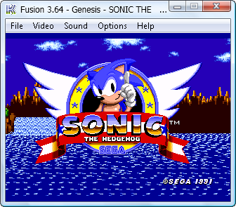
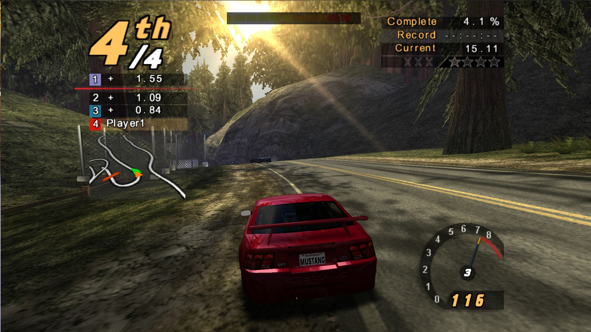
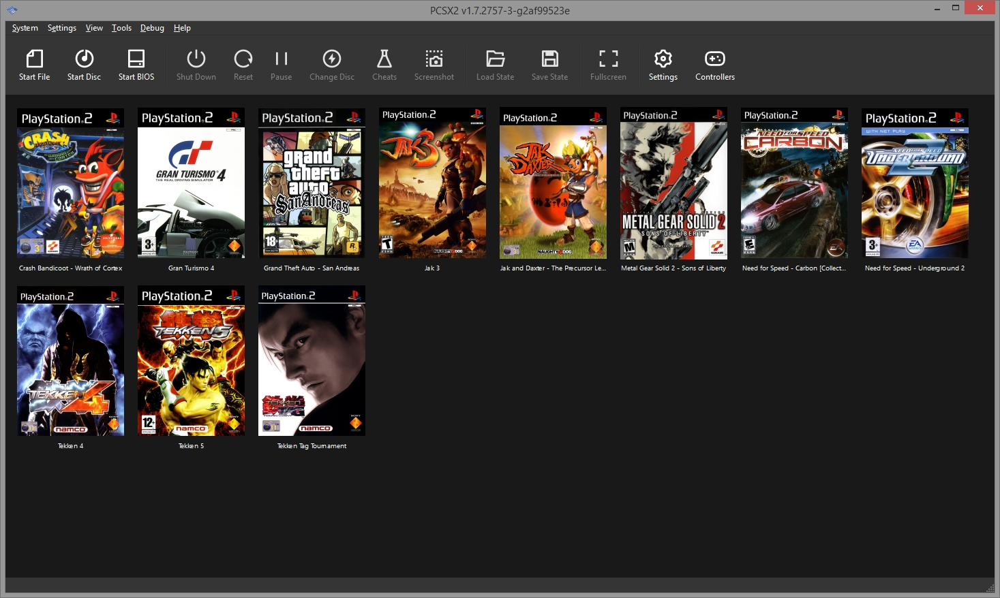
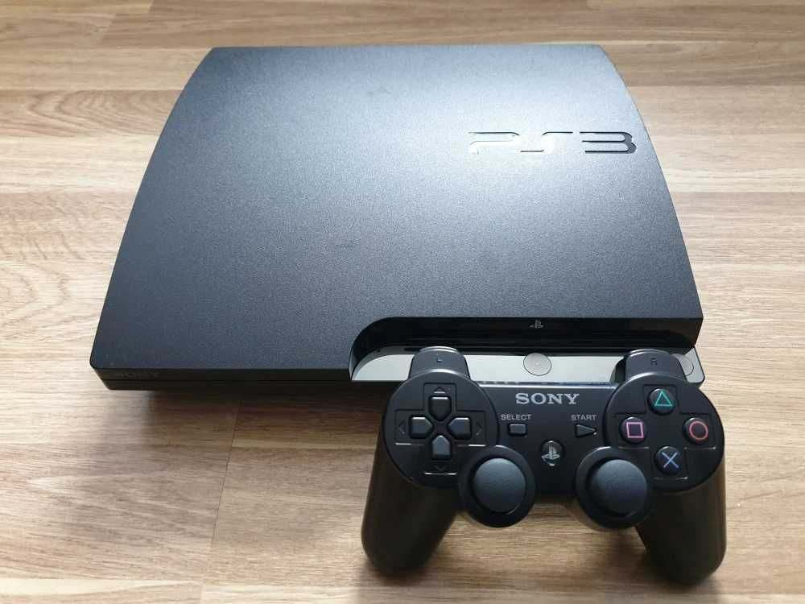

the power of emulation: PCSX2, RPCS3, 86Box and more
the beginnings
Ever since I was a little kid I've been particularly interested in game consoles. Growing up I only had a pretty low end desktop PC so the idea of games that were only available on other platforms was quite enigmatic.
Around 2016 I discovered that some console games can in fact be played on Windows. Back then I was really into Sonic games so I'd play around with a Sega Genesis emulator called Fusion and run different community-made mods of Sonic Games (called ROM hacks). Many of them were of very high quality, with user-created levels, characters, sometimes even entire stories, which provided me with hours of fun.
The first question that came into my mind was, "how did they manage to make an entire console work on a Windows computer?". The idea that someone managed to make games for an entirely different device run on my ordinary PC seemed completely alien to me.
I wasn't far from the truth because, to the average person, emulation may as well be magic. It is very difficult as it requires deep knowledge of the original hardware and hundreds of hours of reverse engineering. Even for a console seemingly as simple as the Genesis, the developers had to study the original firmware and emulate the entire Motorola CPU, Yamaha sound chip and the rest of the components which, needless to say, requires a lot of programming skill.

PS2 emulation with PCSX2
As I grew older my interest in other devices deepened, and so I tried emulating PlayStation 2 games out of curiosity. Even though my CPU wasn't quite powerful enough to run the PS2 version of Need for Speed: Hot Pursuit 2, I was impressed at just how different it was from the PC version I played as a kid. The PS2 version was the first game to be developed by EA BlackBox, notorious and cherished for the staples of the series such as Underground, Most Wanted and Carbon, so many players would agree that it is the superior way to play it, given it has nicer graphics, car models and better opponent and police AI.
The software that made this possible is an emulator called PCSX2, the developers of which have made collosal progress in the last few years. Last time I played NFS Hot Pursuit 2, it still had some noticeable bugs that have all been fixed by now. It let me play other PlayStation 2 exclusives, such as Gran Turismo 4 and Burnout 3: Takedown which became some of my favorite racing games.
A huge part of what makes emulation so great is that it lets you play your favorite console games with modern enhancements, such as higher resolutions, widescreen and 60FPS patches, even online play for games that were originally splitscreen. It also enables software and hardware preservation as retro consoles get scarce and extremely overpriced, and disc games are subject to decay and become difficult to obtain. Unfortunately, some companies such as Nintendo fight emulation and game preservation with all their force while shamelessly using it for their own products (notably the NES Classic Edition) and not providing an alternative way to play their delisted games. This makes things difficult for gamers who simply want to enjoy their childhood titles.

PS3 emulation with RPCS3
Delving into Gran Turismo 4 on the PS2 and realizing just how interesting the game is, especially with the aspect of collecting historical cars that aren't quite available in arcade racers like Need for Speed, I quickly became infatuated with the series and wanted to try the later titles. While GT4 is considered the best game in the series, I was curious about the graphics and gameplay enhancements offered by the sheer computing power of the PlayStation 3.
That was when I realized 7th generation console emulation is still not quite perfect. While many games are perfectly playable, most will have notable bugs and imperfections, and the processing power required to emulate the PS3 makes it not so accessible to everybody. Nevertheless I enjoyed playing Gran Turismo 5 and liked it so much that I even bought a real PS3 to play GT6 which doesn't run too well in the emulator. I was pretty happy with my purchase as there are many upsides to owning a modded PS3.
PC emulation with 86Box
While console emulation in itself is amazing, what completely blew my mind was the ability to emulate PC's from the 80's and 90's, starting with the original IBM PC and ending with the Pentium II. Being a huge retro Windows nerd, that made me incredibly curious and so I tried out 86Box by installing Windows 98SE in an emulated Pentium 166 MHz box with a 3dfx Voodoo II and a Sound Blaster AWE32.
Continuing with the idea of software and hardware preservation, 86Box allows you to run ancient software designed for Windows 9x and DOS that simply doesn't run on modern Windows anymore and saves you the hassle of having to dig up an old breaking down Pentium III CPU, motherboard, RAM, IDE hard drive, graphics card and all the other stuff required to run an old OS. While virtual machine software like VMware does run Windows 9x, it does so without graphics capability and you may sometimes run into CPU speed issues. Meanwhile, 86Box emulates an entire era-appropriate PC, allowing old games and specific software to run properly.
Even more amazingly, 86Box is not limited to just Windows, because it emulates the hardware, not the software. One of my greatest feats was managing to install the latest version of Gentoo Linux on a Pentium 166 MHz, complete with networking, sound and a graphical interface. This is possible thanks to the fact that Gentoo is a source distribution, which means you have to compile all the code manually for your machine. This took many nights of configuring and falling asleep to my PC's fans going full speed, but I think the end result was well worth it.
conclusions
In conclusion, emulation is truly an amazing feat that should not be taken for granted. While it can be used for playing games that you don't legally own, it is an extremely important part of preserving software and hardware history, that would be greatly affected without it. We encourage you to only emulate devices and games that you own and dump your own firmware should the emulator require it. And of course, if you enjoyed the software, make sure to support the developers with a coffee. There are many projects that haven't been mentioned in this post, such as the Wii and GameCube emulator Dolphin, and QEMU which allows you to emulate many different PC architectures including ARM. There are also many other awesome projects, so be sure to check them out.